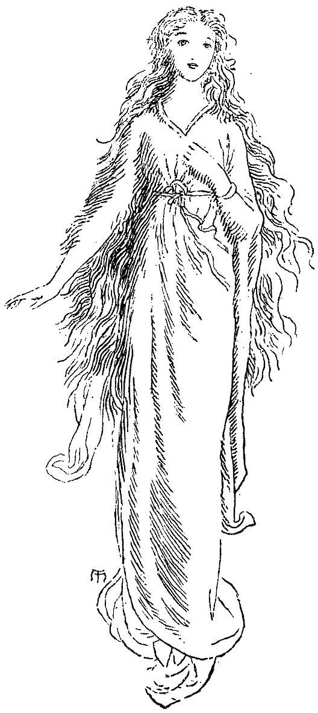

. . . . . .
The undulating woods, and silent well,
And rippling rivulet, and evening gloom,
Now deepening the dark shades, for speech assuming,
Held commune with him; as if he and it
Were all that was.”
SHELLEY’S Alastor.
I awoke one morning with the usual perplexity of mind which accompanies the return of consciousness. As I lay and looked through the eastern window of my room, a faint streak of peach-colour, dividing a cloud that just rose above the low swell of the horizon, announced the approach of the sun. As my thoughts, which a deep and apparently dreamless sleep had dissolved, began again to assume crystalline forms, the strange events of the foregoing night presented themselves anew to my wondering consciousness. The day before had been my one-and-twentieth birthday. Among other ceremonies investing me with my legal rights, the keys of an old secretary, in which my father had kept his private papers, had been delivered up to me. As soon as I was left alone, I ordered lights in the chamber where the secretary stood, the first lights that had been there for many a year; for, since my father’s death, the room had been left undisturbed. But, as if the darkness had been too long an inmate to be easily expelled, and had dyed with blackness the walls to which, bat-like, it had clung, these tapers served but ill to light up the gloomy hangings, and seemed to throw yet darker shadows into the hollows of the deep-wrought cornice. All the further portions of the room lay shrouded in a mystery whose deepest folds were gathered around the dark oak cabinet which I now approached with a strange mingling of reverence and curiosity. Perhaps, like a geologist, I was about to turn up to the light some of the buried strata of the human world, with its fossil remains charred by passion and petrified by tears. Perhaps I was to learn how my father, whose personal history was unknown to me, had woven his web of story; how he had found the world, and how the world had left him. Perhaps I was to find only the records of lands and moneys, how gotten and how secured; coming down from strange men, and through troublous times, to me, who knew little or nothing of them all. To solve my speculations, and to dispel the awe which was fast gathering around me as if the dead were drawing near, I approached the secretary; and having found the key that fitted the upper portion, I opened it with some difficulty, drew near it a heavy high-backed chair, and sat down before a multitude of little drawers and slides and pigeon-holes. But the door of a little cupboard in the centre especially attracted my interest, as if there lay the secret of this long-hidden world. Its key I found.
One of the rusty hinges cracked and broke as I opened the door: it revealed a number of small pigeon-holes. These, however, being but shallow compared with the depth of those around the little cupboard, the outer ones reaching to the back of the desk, I concluded that there must be some accessible space behind; and found, indeed, that they were formed in a separate framework, which admitted of the whole being pulled out in one piece. Behind, I found a sort of flexible portcullis of small bars of wood laid close together horizontally. After long search, and trying many ways to move it, I discovered at last a scarcely projecting point of steel on one side. I pressed this repeatedly and hard with the point of an old tool that was lying near, till at length it yielded inwards; and the little slide, flying up suddenly, disclosed a chamber—empty, except that in one corner lay a little heap of withered rose-leaves, whose long-lived scent had long since departed; and, in another, a small packet of papers, tied with a bit of ribbon, whose colour had gone with the rose-scent. Almost fearing to touch them, they witnessed so mutely to the law of oblivion, I leaned back in my chair, and regarded them for a moment; when suddenly there stood on the threshold of the little chamber, as though she had just emerged from its depth, a tiny woman-form, as perfect in shape as if she had been a small Greek statuette roused to life and motion. Her dress was of a kind that could never grow old-fashioned, because it was simply natural: a robe plaited in a band around the neck, and confined by a belt about the waist, descended to her feet. It was only afterwards, however, that I took notice of her dress, although my surprise was by no means of so overpowering a degree as such an apparition might naturally be expected to excite. Seeing, however, as I suppose, some astonishment in my countenance, she came forward within a yard of me, and said, in a voice that strangely recalled a sensation of twilight, and reedy river banks, and a low wind, even in this deathly room:—

“Anodos, you never saw such a little creature before, did you?”
“No,” said I; “and indeed I hardly believe I do now.”
“Ah! that is always the way with you men; you believe nothing the first time; and it is foolish enough to let mere repetition convince you of what you consider in itself unbelievable. I am not going to argue with you, however, but to grant you a wish.”
Here I could not help interrupting her with the foolish speech, of which, however, I had no cause to repent—
“How can such a very little creature as you grant or refuse anything?”
“Is that all the philosophy you have gained in one-and-twenty years?” said she. “Form is much, but size is nothing. It is a mere matter of relation. I suppose your six-foot lordship does not feel altogether insignificant, though to others you do look small beside your old Uncle Ralph, who rises above you a great half-foot at least. But size is of so little consequence with old me, that I may as well accommodate myself to your foolish prejudices.”
So saying, she leapt from the desk upon the floor, where she stood a tall, gracious lady, with pale face and large blue eyes. Her dark hair flowed behind, wavy but uncurled, down to her waist, and against it her form stood clear in its robe of white.
“Now,” said she, “you will believe me.”
Overcome with the presence of a beauty which I could now perceive, and drawn towards her by an attraction irresistible as incomprehensible, I suppose I stretched out my arms towards her, for she drew back a step or two, and said—
“Foolish boy, if you could touch me, I should hurt you. Besides, I was two hundred and thirty-seven years old, last Midsummer eve; and a man must not fall in love with his grandmother, you know.”
“But you are not my grandmother,” said I.
“How do you know that?” she retorted. “I dare say you know something of your great-grandfathers a good deal further back than that; but you know very little about your great-grandmothers on either side. Now, to the point. Your little sister was reading a fairy-tale to you last night.”
“She was.”
“When she had finished, she said, as she closed the book, ‘Is there a fairy-country, brother?’ You replied with a sigh, ‘I suppose there is, if one could find the way into it.’”
“I did; but I meant something quite different from what you seem to think.”
“Never mind what I seem to think. You shall find the way into Fairy Land to-morrow. Now look in my eyes.”
Eagerly I did so. They filled me with an unknown longing. I remembered somehow that my mother died when I was a baby. I looked deeper and deeper, till they spread around me like seas, and I sank in their waters. I forgot all the rest, till I found myself at the window, whose gloomy curtains were withdrawn, and where I stood gazing on a whole heaven of stars, small and sparkling in the moonlight. Below lay a sea, still as death and hoary in the moon, sweeping into bays and around capes and islands, away, away, I knew not whither. Alas! it was no sea, but a low fog burnished by the moon. “Surely there is such a sea somewhere!” said I to myself. A low sweet voice beside me replied—
“In Fairy Land, Anodos.”
I turned, but saw no one. I closed the secretary, and went to my own room, and to bed.
All this I recalled as I lay with half-closed eyes. I was soon to find the truth of the lady’s promise, that this day I should discover the road into Fairy Land.